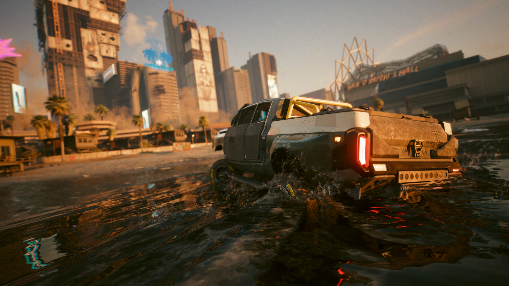

CP2077's Big Rebuild!
It's no mysytery that's Cypberpunk's development was rocky at best, with multiple delays and an extremely unpolished launch Cyberpunk has been marded in controvesy. However, over time the game has been graudally improved and with the release of it's sole expansion: Phantom liberty, Cyberpunk has gotten it's biggest overhaul yet. Pratically every core gameplay feature was changed to the point of being nearly incomparable to how it was originally. With such large changes many online sources have been rendered obsolte and outdated, so this site serves as an up to date source based on my own personal reserch into the details of Cyberpunk 2077 2.0's mechanics. I'll go into detail of how item looting and progression works, and how Skills and Perks are organized with the removal of the original skills and instead a greater focus on atributes.
Even driving got some major changes.
So what all got changed?
Well, lots of things are different in the 2.0 update, in no particular order: The player can use small arms while driving in a car. Clothing no longer has an armor rating or mod slots. The police where overhauled a second time, opperating much closer to player expectations. Only Iconic weapons can be leveled through crafting. Many crafting specs were removed. Grenades and healing items are no longer looted from the enviornment and instead are limited to a charge and cooldown system with more powerful consumables being found only at spesific level thresholds. Many Cyberware were rebalanced or given new effects, including granting most an armor stat to make up for the removal of armor from armor. In addition, the player character now has cyberware capacity that creates a hard cap of how much the player can equip at once. New "+" tiers, for example there are tier 2 weapons as well as tier 2+ weapons.
To summarize, here's the biggest overhauls.
- Vechicle-based Combat
- Item progression
- Perks and Skills
- Cyberware
- Crafting